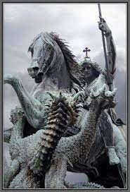

مدينة رفح تبعد عن العريش حالياً حوالى ٤٥ كم، ومدينة رفح التـى بنيـت علـى أطـلال المدينـة البيزنطية القديمة وأسمها رافيا وقد ذكرها المؤرخ اليهودى يوسيفوس وكانـت أول محطـة إستراح فيها القائد اليونانى تيطس وهو فى طريقه لإخضاع اليهود الذين تمردوا على الإمبراطوريـة الرومانية وكان ذلك فى سنة ٧٠ بعد ميلاد السيد المسيح له المجد وهى مدينة حدوديـة منـذ أقـدم العصور. ورفح أرض صلبة وفى شمال المنطقة كثبان رملية يقطعهـا مصـب وادى العـريش وتتـابع الأرض الصلبة حتى الزرانيق بدء بحيرة البردويل وهناك نجد لساناً من الأرض فى وسط البحيرة يتسح حينا ويضيق حيناً إلى أن يصل إلى منتصف ساحل البحيرة تقريباً يبدأ التل فى الإرتفاع ويعرف هذا التـل "الفلس" حيث تتسع الأرض عنده ثم يستمر الطريق عند طرف البحيرة الغربى تتبع ساحل البحر حتى أكوام الفرما. وقد عثر فى خرائب مدينه رفح على آثار منقولة، لها صلة بالديانة المسيحية وهى عبارة عن تمثـال من الرخام الأبيض الناصع وهو تمثال للقديس العظيم مارجرجس، وكذلك تمثال آخر للقديسة العظيمة أم النور العذراء مريم.
